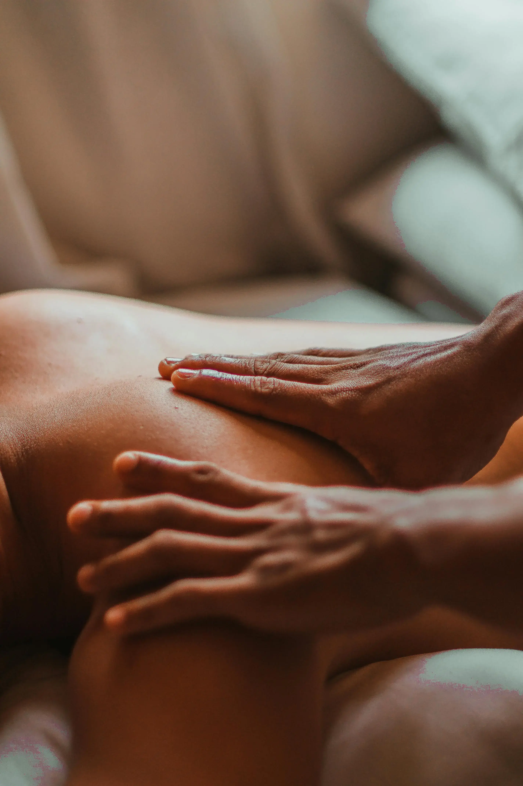

Bienvenue chez Viharis
Découvrez notre univers de bien-être et de détente, où chaque moment est conçu pour harmoniser le corps et l’esprit. Laissez-vous guider et profitez d’expériences uniques qui revitalisent votre énergie.
Notre histoire
Découvrez notre univers de bien-être et de détente, où chaque moment est conçu pour harmoniser le corps et l’esprit. Laissez-vous guider et profitez d’expériences uniques qui revitalisent votre énergie.
Nos valeurs
Bienveillance
Nous plaçons l'humain au centre de nos formations, avec écoute et respect.

Professionnalisme
Nous partageons notre expertise pour que chaque élève atteigne un niveau d'excellence.

Passion
Nous transmettons notre amour du bien-être et de la détente à travers nos formations.
Didier
Didier est masseur certifié, passionné par le massage bien-être et le développement personnel. Il accompagne chaque élève avec attention et expertise. Le massage tantrique et cachemirien est pour lui un chemin d’éveil qui relie le corps, l’esprit et l’âme. Où chaque geste devient un acte sacré, une méditation en mouvement, permettant de se reconnecter à soi-même, d’harmoniser son énergie et d’honorer le corps comme temple. Une pratique dépasse le simple bien-être physique pour offrir une transformation intérieure et une pleine conscience de l’instant.